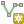
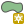
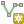
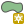
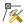
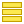

2 Векторизация
Векторизация изображения — перевод из растрового формата в векторный. При этом все объекты отображаются в виде точек, линий или полигонов, для каждого объекта заполняется атрибутивная информация (преобладающая порода, тип леса и т.д.).
Исходными данным для выполнения заданий этого раздела являются геопривязанные изображения из раздела 1 “Пространственная привязка растра”. Так же вы можете загрузить геопривязанные изображения для выполнения заданий по ссылке ниже.
2.1 Оцифровка точечных объектов
Точками обозначаются объекты, не имеющие длину или площадь (колодцы, горные вершины и др.). Для примера используем геопривязанное изображение “Национальный парк столбы” что бы оцифровать некоторые скалы и добавить им названия. Для этого создадим новый точечный векторный слой с атрибутом “name” и запишем туда название каждой из скал.
2.1.1 Создание векторного слоя
Для создания векторного слоя перейдите в меню “Слой” > “Создать слой” > “Создать слой Shapefile…”. В поле имя файла нажмите на иконку “…”, после чего выберите папку для сохранения файла и введите название (например “Скалы”, в зависимости от содержания слоя).
При создании нового векторного слоя всегда явно указывайте путь его сохранения. Для этого в поле “Имя файла” нажмите “…”, выберите папку для сохранения и затем введите название файла. Всегда сохраняйте файл в папку проекта!
В поле “Тип геометрии” необходимо выбрать какой тип геометрии будет содержать слой. Один слой может содержать объекты только одного типа: точка, линия или полигон. Поскольку будут оцифрованы точечные объекты (вершины скал) зададайте “Тип геометрии” - “Точка”. При создании нового слоя возможно сразу задать перечень полей (атрибутов), в которые будут записываться непространственные характеристики объектов (название, тип покрытия дороги, средний возраст насаждения в выделе и др.). Дополнительные поля можно добавить или удалить в любой момент после создания векторного слоя в контекстном меню панели слоев “Открыть таблицу атрибутов”. При создании атрибута задается тип и размер. Тип данных определяет характер информации, который может содержать поле, параметр “Длина” определяет максимальное количество символов. Шейп-файлы содержат следующие основные типы данных:
- Текст (string) - текстовое поле, может содержать цифры, буквы и др. символы (максимальное количество символов определяется настройкой “Длина”);
- Целое число (integer) - целочисленное поле, может содержать только целые числа (максимальное количество знаков определяется настройкой “Длина”);
- Десятичное число (double) - может содержать дробные числа (максимальное количество знаков определяется настройкой “Длина”, максимальное количество знаков после запятой определятеся настройкой “Точность”).
Всегда обращайте внимание на тип создаваемого поля! В поля типа “Целое число” или “Десятичное число” нельзя будет записать текстовые символы а к полю типа “Текст” нельзя применить арифметические операции, даже если оно содержит исключительно числа!
Для записи названий скал создадим новое поле. В области “Новое поле” введите “Имя” - “name”, «Тип» – “Текст”, размер можно оставить без изменений (80 символов). После нажатия на иконку “Добавить в список полей”  , поле с заданными параметрами появится в области “Список полей”. Теперь слой содержит два поля: “id” (создается по умолчанию) и только что добавленное поле “name” в которое будут записываться названия объектов. Так же есть возможность удалить поле при помощи иконки “Удалить поле”
, поле с заданными параметрами появится в области “Список полей”. Теперь слой содержит два поля: “id” (создается по умолчанию) и только что добавленное поле “name” в которое будут записываться названия объектов. Так же есть возможность удалить поле при помощи иконки “Удалить поле”  (Рисунок 2.1).
(Рисунок 2.1).

После задания всех параметов нажмите “ОК”, новый слой будет сохранен на диск и появится в панеле “Слои”.
- Названия полей всегда задаются латинскими буквами без пробелов и специальных символов. Слова в названии поля следует разделять знаком нижнего подчеркивания “_“.
- В шейп-файле длина названия поля ограничена 10 символами.
По примеру выше создайте новый векторный слой “Скалы” с типом геометрии “точка” и текстовым полем “name” (Видео 2.1).
2.1.2 Добавление точечных объектов
Для добавления новых объектов в векторный слой “Скалы” следует выделить его в панеле слоев и нажать иконку “Режим редактирования”  в панеле “Инструменты оцифровки”
в панеле “Инструменты оцифровки”

После активации режима редактирования “Инструменты оцифровки” становятся доступны, появляется возможность добавлять или изменять объекты слоя. “Режим редактирования” выполняет роль предохранителя. Пока он не активирован, слой находится в режиме просмотра и не может быть изменен. Таким образом данные защищены от нежелательных случайных изменений.
Панель “Инструменты оцифровки” состоит из следующих инструментов:
- “Сохранить изменения”
 - при нажатии сохраняются изменения в объектах слоя;
- при нажатии сохраняются изменения в объектах слоя; - “Добавить объект” - позволяет добавить объект (точка
 , линия  или полигон  в зависимости от типа геометрии слоя);
, линия  или полигон  в зависимости от типа геометрии слоя); - “Инструмент правки вершин”  - позволяет передвигать или удалять отдельные вершины геометрий;
- “Удалить выделенное” ;
- “Отменить” и другие.
Что бы добавить первую точку выберите инструмент “Добавить объект”  и нажмите на одну из подписанных скал. Появится окно “Атрибуты объекта” в котором нужно заполнить ранее созданное поле “name” - название скалы (поле “id” оставьте без изменений - Рисунок 2.2), после чего нажать “ОК”. Новый объект появится на карте. Аналогичным способом добавляют остальные вершины скал.
и нажмите на одну из подписанных скал. Появится окно “Атрибуты объекта” в котором нужно заполнить ранее созданное поле “name” - название скалы (поле “id” оставьте без изменений - Рисунок 2.2), после чего нажать “ОК”. Новый объект появится на карте. Аналогичным способом добавляют остальные вершины скал.

Хотя названия полей всегда задаются латинскими буквами без пробелов и специальных символов, для содежимиого полей таких ограничений нет, использование кириллицы вполне допустимо. Основное ограничение содержимого поля - тип данных поля, задается при создании.
По примеру выше добавьте все подписанные вершины скал в виде точек. Для каждой точки запишите название скалы (Видео 2.2).
2.1.3 Изменение положения точечных объектов
Изменение формы существующих объектов выполняется при помощи “Инструмента правки вершин” , позволяющего изменить местоположение вершин и сегментов а так же добавить/удалить вершины. Воспользуемся этим инструментом что бы передвинуть добавленные точки. Для этого активируйте инструмент и передвиньте любую из точек, нажав на нее.
Используйте “Инструмента правки вершин” что бы передвинуть несколько точек, как показано выше (Видео 2.3).
Для перемещения сразу нескльких точек, выделите их (зажмите левую кнопку мыши > потяните курсор > выделите точки синим контуром) и переместите одну из точек на новое место. Остальные точки сместятся вслед за ней.
Используйте “Инструмента правки вершин” что бы выделить и переместить несколько точек, как показано выше (Видео 2.4).
Пока точки выделены вы можете удалить их, нажав клавишу “Delete”. Для отмены последних действий используйте инструмент “Отменить” или сочетание клавиш Ctrl+Z. Инструмент “Вернуть”  позволяет вернуть отмененные изменения (
позволяет вернуть отмененные изменения (Ctrl+Shift+Z). Для просмотра изменений возможно использовать панель “История изменений” которая включается в меню “Настройки” > “Панели” > “История изменений” и позволяет так же отменить и вернуть изменения (Рисунок 2.3, Видео 2.5).

Изменения векторного слоя (добавление, удаление объектов, изменение атрибутов и т.д.) не записываются в файл автоматически. Для сохранения изменений воспользуйтесь иконкой “Сохранить изменения”  в панеле “Инструменты оцифровки”.
в панеле “Инструменты оцифровки”.
- После сохранения изменений в файл, становится невозможно отменить последние действия. Перед сохранением убедитесь в том, что все правки сделаны верно, после сохранения отменить их уже не получится!
- Не путайте иконки “Сохранить изменения” и “Сохранить проект”
 . Первая сохраняет изменения в слое, вторая - проект!
. Первая сохраняет изменения в слое, вторая - проект!
При помощи панели “История изменений” отмените несколько последних действий и сохраните изменения в слое (иконки “Сохранить изменения”  ).
).
2.1.4 Удаление точечных объектов
Другой способ удаления объектов заключается в выделении их при помощи “Панели выбора объектов” (в которой выбирается один из инструментов). Выделенные объекты окрасятся в желтый цвет, после чего нажимается клавиша Delete или иконка “Удалить выделенное” . Появится предупреждающее окно в котором нужно нажать “Удалить объект” (Рисунок 2.4). Для примера используем инструмент “Выбрать объекты в прямоугольнике или точке”  для выбора и удаления объектов (Видео 2.6).
для выбора и удаления объектов (Видео 2.6).

По примеру выше, выделите и удалите несколько точечных объектов. Сохраните изменения в слое и отключите режим редактирования.
2.2 Таблица атрибутов слоя
При добавлении точечных объектов в поле “name” записывались названия скал. Эти названия хранятся в таблице атрибутов и могут использоваться для подписи объектов, по аналогии с подписями кварталов (Задание 1.3). Вы можете открыть таблицу атрибутов и убедиться в этом. Для этого в панеле слоев откройте контекстное меню слоя “Скалы” и выберите пункт “Открыть таблицу атрибутов”  . Таблица атрибутов откроется в отдельном окне (Рисунок 2.5).
. Таблица атрибутов откроется в отдельном окне (Рисунок 2.5).

Каждая строка таблицы атрибутов связана с отдельной геометрией (точкой), столбцы - атрибутивные характеристики. При выделении строки в таблице атрибутов, связанная точка будет выделена желтым цветом, и наоборот, при выделении точек в главном окне программы, они будут выделены синим цветом в таблице атрибутов (Видео 2.7). Конечно, атрибутов (столбцов) может быть больше чем 1 или 2. Для точек это могли бы быть дополнительные стобцы в виде координат, значений высот и т.д.
Откройте таблицу атрибутов слоя “Скалы”.
Таким образом каждой точке соответствует название скалы. Эти названия можно использовать, например, в качестве подписей точек. Для добавления подписей скал перейдите в контекстное меню слоя “Скалы” > “Свойства…” > “Подписи”. Режим “Без подписей” измените на “Обычные подписи”, в поле “Значение” выберите атрибут “name” (в это поле записывались названия скал при создании объектов), на вкладке “Буфер” поставьте чек-бокс в пункте “Буферизовать подписи” (это сделает их более читаемыми на темном фоне) и нажмите “ОК”. Рядом с каждой точкой появится подпись - название скалы (Видео 2.8).
По примеру выше, добавьте подписи для точечных объектов (см. Видео 2.8).
2.3 Оцифровка линейных объектов
По аналогии с точечными объектами могут оцифровываться и линейные объекты. Обычно к таковым относят объекты большой протяженности и малой ширины (дороги, небольшие реки, лэп и т.д.). В векторной моделе данных линии представляют из себя последовательность соединенных точек. Соответственно образуются две части такого вида геометрии: вершины (точки) и сегменты (линии их соединяющие). Для примера оцифруем некоторые тропы и дороги на территории заповедника “Столбы”.
Каждый векторный слой может содержать только один тип геометрии (точка, линия, полигон) поэтому для оцифровки линейных объектов создадим новый векторный слой (см. Задание 2.1) под названием “Дороги”, “Тип геометрии” - “Линия”. Так же добавим атрибут “Имя” - “type”, “Тип” - “Текст” куда будем запиcывать тип дороги (автомобильная дорга или тропа) (Рисунок 2.6).

По примеру выше создайте новый векторный слой “Дороги” с типом геометрии “линия” и текстовым полем “type”.
2.3.1 Оцифровка автомобильной дороги
Первым добавленным объектом будет автомобильная дорога на территории заповедника “Столбы”. Для этого переключите слой “Дороги” в “Режим редактирования”  (см. Задание 2.2), и оцифруйте дорогу, путем расставления точек поворота по линии дороги. В поле “type” сделайте запись “автомобильная дорога”. После добавления дорги сохраните измененеия в слое, нажав на иконку “Сохранить изменения”
(см. Задание 2.2), и оцифруйте дорогу, путем расставления точек поворота по линии дороги. В поле “type” сделайте запись “автомобильная дорога”. После добавления дорги сохраните измененеия в слое, нажав на иконку “Сохранить изменения”  (Видео 2.9).
(Видео 2.9).
По умолчанию новые слои имеют тонкие линии и случайный цвет. Что бы линии были более заметны, увеличим толщину линий и зададим яркий цвет, для этого перейдите в “Свойства…” слоя > “Стиль” измените цвет на более яркий и увеличьте толщину линий до 0,66 (Видео 2.10).
- По примеру выше оцифруйте автомобильную дорогу (Видео 2.9).
- Измените стиль слоя “Дороги”, увеличьте толщину линий и смените цвет (Видео 2.10).
2.3.2 Топология линейных объектов. Инстрyменты прилипания
Под топологией объектов понимают их взаимное положение. Это важное свойство векторной модели данных, которое должно учитыватся при оцифровке объектов. Например, если река впадает в другую реку, то в векторной моделе данных эти две линии должны иметь общую точку. Разрыв или пересечение линий в этой точке будут топологическми ошибками (Рисунок 2.7). Этот пример можно экстраполировать на множество других объектов: дороги, тропы, ЛЭП и т.д.


Соблюдение топологии невозможно без использования специальных инструментов, находящихся в “Панеле инструментов прилипания” 
Инструмент “Разрешить прилипание”  активирует возможности топологического редактирования, после чего остальные инструменты на панеле становятся активны. Возможны следующие настройки прилипания:
активирует возможности топологического редактирования, после чего остальные инструменты на панеле становятся активны. Возможны следующие настройки прилипания:
- Прилипание к объектам всех слоев или только текущего

- Прилипание к вершинам, сегментам или другим элементам геометрий

- порог прилипания позволяет задать радиус прилипания и единицы измерения этого радиуса (единицы измерения зависят от СК проекта: градусы или метры);
- Инструмент “Вычитать наложения на текущем слое” позволяет избежать наложения полигонов друг на друга

- функция “Включить трассировку” дает возможность добавлять новые геометрии по границам существующих.
Для оцифровки троп требуется соблюсти топологию. Настройте “Инструменты прилипания” следующим образом:
- активируйте панель инструментов прилипания нажав на иконку “Разрешить прилипание”
 ;
; - настройте прилипание К текущему слою;
- настройте прилипание к Вершинам и Сегментам (в этом пункте возможно выбрать одновременно несколько режимов);
- задайте порог прилипания 30 пикселей (пикс).
Теперь при добавлении нового объекта и приближении указателя на расстояние менее 30 пикселей к уже существующей линии, курсор «приклеится» к ней (прилипание к вершинам обозначается квадратом, прилипание к сегментам - знаком “х” ) (Рисунок 2.8). Такие настройки позволяют избежать разрывов в линиях. Используя знания о топологическом редактировании, можно векторизировать оставшиеся тропы топологически корректно (Видео 2.11).


По примеру выше, настройте инструменты прилипания и оцифруйте оставшиеся тропы (они выделены пунктиром). В атрибут “type” запишите слово “тропа”.
2.3.3 Редактирование линейных объектов
Редактирование добавленных линейных объектов выполняется при помощи “Инструмента редактирования вершин” (см. Задание 2.3 и Задание 2.4), однако, по сравнению с точечными объектами, этот инструмент имеет гораздо больше возможностей редактирования линейных объектов. Рассмотрим эти возможности на примере объектов из слоя “Дороги”.
Выбрав “Инструмент редактирования вершин” и нажав правой кнопкой мыши на одну из линий, отоброзятся составные части этой линии (вершины в виде красных кругов и сегменты, соединяющие их). Инструмент позволяет редактировать положение вершин и сегментов а так же добавлять или удалять новые вершины. Для перемещения вершины, нажмите на нее левой клавишей мыши и перетяните в нужное место (Видео 2.12).
По примеру выше, переместите несколько вершин.
Для добавления новой вершины нажмите левой клавишей мыши на середину сегмента (при наведении курсора на сегмент его середина будет выделена символом “+”) и переместите новую вершину в нужное место. Аналогично сегмент можно добавить в начале и конце линии, нажав на символ “+” (Видео 2.13).
По примеру выше, добавьте вершины в cередине и конце отрезка.
Для перемещения сегмента целиком нажмите на него (не на середину) левой клавишей мыши и переместите на нужное место. При этом изменится положение двух вершин, образующих сегмент (Видео 2.14).
По примеру выше, переместите несколько сегментов линии.
Для выделения нескольких вершин зажмите левую клавишу мыши и потяните курср. Вершины попадающие в синюю область будут подсвечены синим цветом. Выделенные вершины возможно удалить, нажав клавишу “Delete” или переместить все вместе (для этого переместите одну из выделенных вершин, остальные последуют за ней). С нажатой клавишей “Shift” возможно выделить произвольные вершины (Видео 2.15).
По примеру выше, выделите и удалите несколько вершин в слое “Дороги”.
Во время оцифровки дорог, для каждого объекта было заполнено поле (атрибут) “type”, который принимал 2 значения: “автомобильная дорога” или “тропа”. Такие атрибуты называют группирующими потому что они позволяют разделить объекты на несколько групп (на 2 группы в данном случае). Воспользуемся атрибутом “type” что бы раскрасить дороги и тропы в разные цвета. Для этого перейдите в свойства слоя “Дороги” > “Стиль”, измените режим “Простая символика” на “Символизация по уникальным значениям”, в поле “Значение” выберите поле для классификации (“type”) и нажмите “Классифицировать” (Рисунок 2.9). В окне появятся 3 класса объектов с разным цветом линии, после чего нажмите “ОК”.

Таким образом уникальные значения атрибута “type” использовались для окраски дорог в разные цвета. Более подробно настройка стиля объектов будет рассмотрена в последующих разделах (см. ?sec-thematic_maps).
По примеру выше, настройте стиль слоя “Дороги”. Результат выполнения задания изображен на рисунке ниже (Рисунок 2.10)

2.4 Оцифровка полигональных объектов
Полигоны используют для оцифровки площадных объектов (больших рек, земельных участков, лесных кварталов и выделов). Полигон можно рассматривать как замкнутую линию (начальная и конечная точки имеют одинаковые координаты). Во многом оцифровка полигональных объектов схожа с линейными, но имеет свои особенности. Рассмотрим оцифровку полигональных объектов на примере лесных кварталов учебно-опытного лесхоза СибГУ. Для этого используем план лесонасаждений из предыдущего раздела (см. Задание 1.12).
Как было упомянуто, каждый векторный слой может содержать только один тип геометрии (точка, линия или полигон), поэтому для начала необходимо создать новый векторный слой под названием “Выделы”, “Тип геометрии” - “Полигон”. Так же добавим новое поле “videl” куда будем записывать номер выдела при оцифровке (“Тип” - “Целое число”, “Размер” - 2) и удалим поле “id” (поле добавляется автоматически при создании нового векторного слоя в формате Шейп-файл) (Рисунок 2.11).

Для добавления первого полигона переведите слой “Выделы” в “Режим редактирования”  и оцифруйте один выдел на плане лесонасаждений. Оцифровка производится аналогично линейными объектами, но начальная и конечная точка будут связаны. В атрибутивное поле “videl” запишите номер выдела (Видео 2.16).
и оцифруйте один выдел на плане лесонасаждений. Оцифровка производится аналогично линейными объектами, но начальная и конечная точка будут связаны. В атрибутивное поле “videl” запишите номер выдела (Видео 2.16).
По примеру выше, создайте полигональный векторный слой “Выделы”. На плане лесонасаждений выберите один квартал (Вам предстоит оцифровать все выделы в этом квартале) и оцифруйте один из выделов.
2.4.1 Топология полигональных объектов
Подобно линейным объектам, полигоны так же должны быть оцифрованы топологически корректно (см. Глава 2.3.2). В случае с выделами, топологически корректная оцифровка заключается в отсутствии разрывов а так же наложений между полигонами. При автоматическом расчете плоащади полигонов топология крайне важна. Топологически корректная оцифровка, как и в случае с линейными объектами, производится при помощи панели “Инструменты прилипания”
Для исключения пересечений между полигонами используется настройка наложений
В режиме “Вычитать наложения на текущем слое”, новый полигон, пересекающийся с существующим, будет обрезан по границе последнего. Воспользуемся этой настройкой для топологически корректоной оцифровки оставшихся выделов. Новый полигон добавляют так, что бы в местах общей границы он пересекался с существующим (Видео 2.17).
По примеру выше, оцифруйте оставшиеся выделы. Заполните атрибут “videl” номером выдела для каждого полигона.
Для лучшей видимости совпадения границ полигонов с растровым слоем, сделаем заливку полигонов полупрозрачной и добавим для каждого полигона номер выдела. Для этого перейдите в “Свойства…” слоя “Выделы”, в пункте “Стиль” установите непрозрачность 50 %, в пункте “Подписи” выберите режим “Обычные подписи”, в строке “Значение” выберите поле с номером выдела - “videl”, во вкладке “Буфер” активируйте чек-бокс “Буферизовать подписи” (буфер используется для лучшей видимости подписей), нажмите “OK”.
По примеру выше, настройте подписи и стиль слоя “Выделы”. Результат должен соответствовать рисунку ниже (Рисунок 2.12).

2.5 Панель выбора объектов
Иногда требуется применить тот или иной инструмент к некоторым объектам слоя (например при удалении нескольких объектов). Для выбора таких объектов используется “Панель выбора объектов” 
Первый инструмент “Выбрать объекты в прямоугольнике или точке”  позволяет выделить объект или группу объектов на карте. Для удаления выделенных объектов нажмите клавишу “Delete” или выберите инструмент “Удалить выделенное” в панеле “Инструменты оцифровки”, при этом слой должен находиться в режиме редактирования, в противном случае удаление будет невозможно. Отмена выделения выполняется инструментом “Снять выделение…” , так же отменить выделение можно нажав на пустую область без объектов. Выбор объектов можно производить как точечно, так и в некоторой области (полигоне). Точечный выбор нескольких объектов выполняется при нажатой клавише Control (Ctrl) (Видео 2.18).
позволяет выделить объект или группу объектов на карте. Для удаления выделенных объектов нажмите клавишу “Delete” или выберите инструмент “Удалить выделенное” в панеле “Инструменты оцифровки”, при этом слой должен находиться в режиме редактирования, в противном случае удаление будет невозможно. Отмена выделения выполняется инструментом “Снять выделение…” , так же отменить выделение можно нажав на пустую область без объектов. Выбор объектов можно производить как точечно, так и в некоторой области (полигоне). Точечный выбор нескольких объектов выполняется при нажатой клавише Control (Ctrl) (Видео 2.18).
Окрыв таблицу атрибутов слоя можно еще раз убедиться в связи полигонов с атрибутивными характеристиками. Так, выделенные полигоны будут подсвечены синим цветом в таблице атрибутов, которая так же имеет инструменты для выбора объектов:
- “Выделить объекты удовлетворяющие условию”

- “Выделить все” 
- “Обратить выделение”

- “Снять выделение в слое”
Для выбора отдельного объекта в таблице атрибутов нажмите на номер строки. Выбор от…до производится с зажатой клавишей “Shift”, выбор нескольких строк - с нажатой клавишей “Ctrl” (Видео 2.18).
Чаще всего выбор объектов не конечная цель а промежуточный этап. Частая задача: применить тот или иной инструмент только к выбранным (выделенным) объектам. В таком случае: 1. выбираются объекты по заданными критериям; 2. к выбранным объектам применяется необходимый инструмент. В последующих разделах способы выделения объектов будут рассмотрены более детально (см. Глава 5).
Выберите несколько выделов и удалите их. После удаления выключите режим редактирования,
НЕ сохраняйте изменения в слое! (см. Видео 2.19).
2.6 Ошибки геометрий
При оцифровке объектов могут возникать ошибки геометрий. В QGIS, большинство инструментов работы с векторными слоями не будут работать со слоями содержащими ошибки геометрий. Для выявления таких ошибок существует инструмент Вектор > Обработка геометрии > Проверка геометрии… который создает три временных слоя с указаниями на объекты с корректными и некорректными геометриями. Исправить такие геометрии можно как вручную, так и при помощи инструмента “Исправить геометрии” в панеле “Инструменты анализа”  . Иногда для исправления некоторых ошибок создают буфер нулевого радиуса вокруг объектов. Наиболее распространенные ошибки геометрий следующие:
. Иногда для исправления некоторых ошибок создают буфер нулевого радиуса вокруг объектов. Наиболее распространенные ошибки геометрий следующие:
- Задвоение вершин - геометрия содержит две вершины с одинаковыми координатами;
- Самопересечение линий - линия пересекает саму себя;

- Самопересечение полигонов - полигон пересекает сам себя;

- Висячая линия в полигоне - полигон содержит в своем контуре линию.

Ошибки геометрий подсвечиваются знаком “X” зеленого цвета. Нужно отметить, что некоторые инструменты прилипания (например “Вычитать наложения на текущем слое”) не работают с геометриями содержащими ошибки.